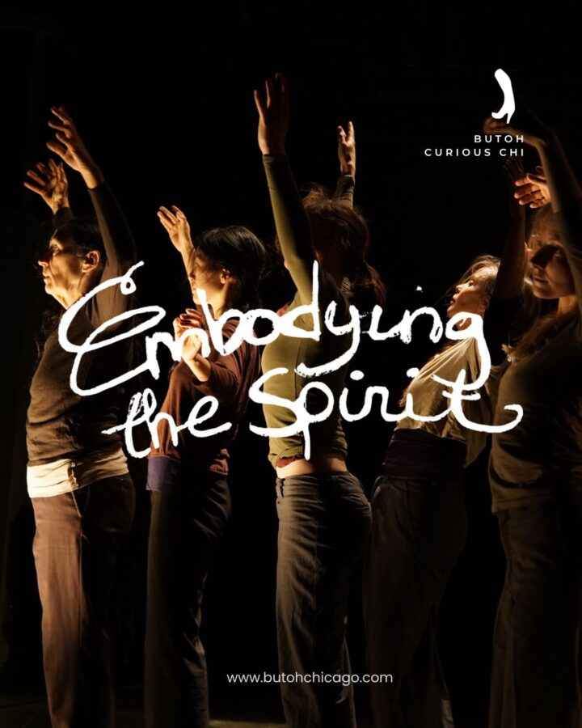

Embodying the Spirit
Discount for Early Birds until March 1, use EARLY to get 15% off*
Tickets: https://givebutter.com/EmbodyingtheSpirit
Embodying the Spirit explores endless questions: What is life? What is the human condition? What is the body? In this age of an increasing use of technology to direct and control so many aspects of our daily lives, a disconnect to nature can easily result. Earth Tomes is a welcome revelation of the body as earth and, through continual transformation, reveals the changing landscape of the body. Images of earth, trees, roots, stones will be layered with explorations of the elemental body (water, wind, etc.) and animals as we celebrate the body as nature.
In this two day workshop we will focus on imagery from the Earth Tomes Project. Partner work will facilitate participants’ individual and collective journeys. The workshop draws from Joan’s training and research with many butoh masters and her background as a Tai Chi practitioner and professional gardener.
This is a process of erasing and recreating the body through guided improvisation inspired by nature imagery. Experience training methods towards a supple body and mind and investigate aesthetics common to butoh through creative explorations. All are welcome, and no previous experience is required. The Checkout is wheelchair accessible; we encourage all curious bodies.
Joan Laage sitting akimbo on the floor, hands spread on her thighs, a black mesh over her face. Photo by Alan Smith.
About Joan Laage. After studying with Butoh masters Kazuo Ohno and Yoko Ashikawa in Tokyo in the late 80s and performing with Ashikawa’s group Gnome, Joan Laage settled in Seattle and founded Dappin’ Butoh in 1990, which she directed until 2001. She is a co-founder of DAIPANbutoh Collective, which produces an annual Butoh festival. Joan performed at the Santiago, New York, Chicago, Portland, Boulder, Seattle, Amsterdam, Warsaw, and Paris Butoh festivals, and a Butoh symposium at the University of California (LA). A Ph.D. in Dance & Related Arts from Texas Woman’s University, who wrote on the significance of the body in Butoh, and a Certified Movement Analyst, she is featured in Sondra Fraleigh’s books – Dancing into Darkness: Butoh, Zen, and Japan and Butoh: Metamorphic Dance and Global Alchemy. Joan is also featured in Butoh America written by Tanya Calamoneri, released in August 2021, and is quoted in Vangeline’s recent publication, Butoh: Cradling Empty Space. She creates site-specific work for Seattle Japanese gardens annually and tours every winter/spring in Europe where she teaches and performs and continues studying under Atsushi Takenouchi. She is an avid Tai Chi practitioner with a background in traditional Asian dance/theater and a professional gardener. Since living in Krakow from 2004–2006, she has been known as Kogut (rooster). https://seattlebutoh-laage.com/